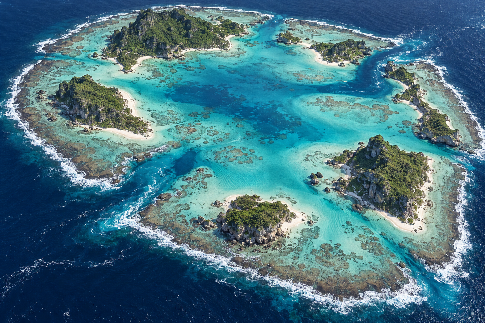

O01 · 1536 × 1024
环礁泻湖
环礁外缘、两处缺口、泻湖深浅分层；分开制作礁盘、沙滩与植被。

查看实际生成提示词
Use case: stylized-concept. Asset type: one standalone air-combat game environment background concept, usable as a 3D terrain modeling reference. Style: cohesive premium realistic AAA environment concept art with physically plausible terrain and PBR-like material detail, highly resolved rock and water surfaces, natural proportions, no fantasy exaggeration. Composition: wide landscape image, one continuous scene filling the canvas, elevated aerial oblique view looking down approximately 55–65 degrees, show the full distinctive regional layout AND readable foreground surface detail; minimal or no sky, no obscuring clouds; strong readable valleys and open flight corridors. Continuous natural environment extending beyond frame, no floating diorama or exposed cutaway slab. Keep every region sharp with balanced daylight and restrained atmospheric depth, no excessive bloom or crushing shadows. Constraints: exactly ONE full-frame image of ONE map. No collage, no panels, no inset, no typography, no labels, no watermark, no UI or HUD, no aircraft, no characters, no explosions, no decorative border. Natural terrain is the focus. Preserve credible erosion, drainage, consistent water level and geology. Render surface foam, depth-color transitions and wind direction coherently when water is present. This is visual concept art, not an actual heightmap or a ready-made 3D asset. Map concept: O01 — 环礁泻湖. Scene/backdrop: A huge broken oval coral atoll with six irregular vegetated islets, two deep navigable reef passes and a shallow central lagoon; submerged reef shelves remain plainly visible. Materials/textures: white coral sand, porous limestone, dense tropical canopy and exposed intertidal rubble. Water and effects: azure shallow lagoon grading to cobalt ocean, reef-edge breakers, foam through passes, sun caustics and faint sand ripples. Lighting: clear neutral daylight, soft angled sunlight revealing relief and material roughness, balanced exposure and accurate local color. Very detailed full-resolution landscape.